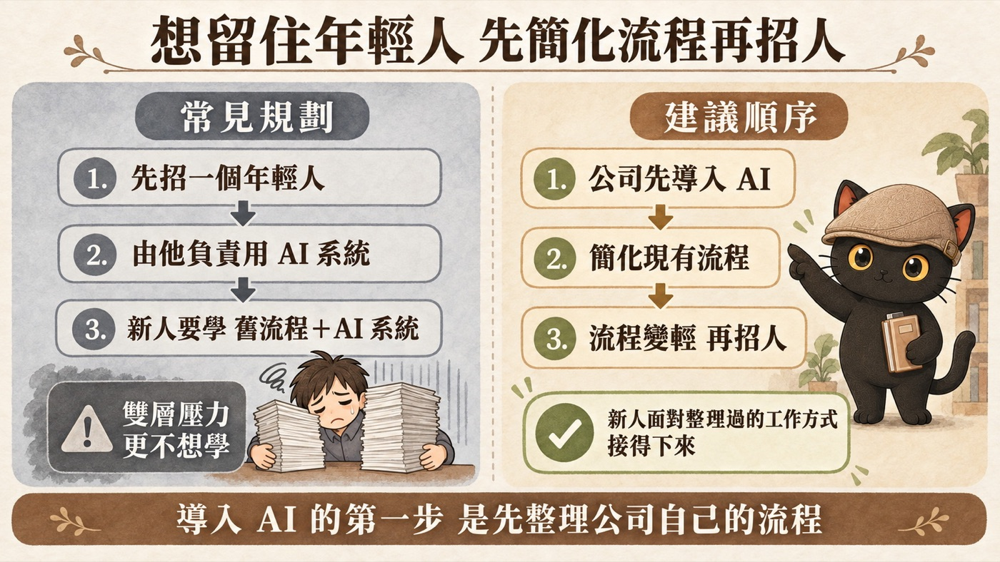

這篇在講什麼
很多公司決定導入 AI 之後，第一步是找人：找一個年輕人來負責，或是把一群同仁和主管叫來一起學。這兩種做法我都遇過，都會卡住，因為學 AI 的負擔落在最沒有餘力的人身上。這篇整理我建議的導入順序：老闆帶著最需要優化的主管，先把一條工作流程做好，確定之後再複製給其他人直接用。文末附一張挑第一條流程的盤點表，和一段可以直接貼給 AI 的提示詞。
- 想導入 AI，卻不知道第一步該找誰的老闆
- 年輕同仁一直流失，大家都說工作太多太雜的老闆
- 辦過 AI 課程或買過工具，結果同仁都沒在用的主管
- 被交代「去研究一下 AI」，自己手上的事卻做不完的人
- 要幫客戶導入 AI，想找一個比較不會失敗的起點的顧問
- 兩種常見的導入方式，為什麼會卡住
- 一套五步的導入順序：先找誰、先做哪條流程、怎麼複製到其他部門
- 一張挑第一條流程的盤點表，附填寫示意
- 一段可以直接貼給 AI、幫你盤點流程的提示詞
兩種常見的導入方式：先找年輕人來用 AI，或叫一群人來上課
第一個單位跟我說，他們的年輕人一直流失，很麻煩，大家都覺得工作太多太雜。我建議他們導入 AI。對方很認同，接著說：「所以我們要先找一個年輕人進來，他才可以使用 AI 系統。」我當場就跟對方說，這個順序要調整。
另一個情況，是老闆一決定導入，就希望把一堆年輕人和各部門主管拉進來一起學。結果自然也沒有用。
兩種做法的方向一樣：先找人來學 AI，再期待 AI 改善工作。
新人要扛雙層壓力，主管自己的事都做不完
新人的處境。一進公司，本來就要學公司的作業流程。如果同時還要學一套 AI 系統，等於是雙層的壓力。而公司原本的流程，正是讓前面的人待不下去的原因。在這個基礎上再疊一層 AI 流程，年輕人更不想學，也更沒有人願意進來。

一群人一起學的處境。大家都很忙，自己的東西都做不完，還要花時間學 AI。學 AI 變成多出來的一件事，自然也就沒有用。
這兩種情況，學 AI 的負擔都落在最沒有餘力的人身上。
導入 AI 的五步順序：先把一條流程做好，再複製給其他人
我會建議老闆這樣走：
- 老闆加上幾個關鍵主管就好。找目前最需要優化的那位主管，不要一次把所有人找進來。
- 先把一條工作流程具體優化好。由顧問陪著老闆和主管，把初步的流程用 AI 跑順。
- 流程確定之後，其他人直接來學、直接用。同仁學的是一套已經跑通的做法，不用自己從頭摸索。
- 讓同仁先感受到 AI 有用。用 AI 立刻解決原本的工作，做起來更快、更流暢，大家才會覺得 AI 有用，才會真的去用。
- 再複製到其他部門。別的部門看到這樣用，會覺得自己也可以用。手上的事變輕了，大家才有空再去思考怎麼優化。
三種做法放在一起看：
| 先找一個年輕人來用 AI | 叫一群同仁和主管來學 | 先把一條流程做好再複製 | |
|---|---|---|---|
| 誰先學 | 剛進公司的新人 | 所有人一起 | 老闆和最需要優化的主管 |
| 要學什麼 | 公司原本的流程，加上 AI 系統 | 一套還沒跟自己工作接上的工具 | 一條已經跑通的流程 |
| 會發生什麼 | 雙層壓力，新人更不想學 | 自己的事都做不完，學了也沒用 | 同仁一用就解決原本的工作，才會想繼續用 |
這個順序對招人也有幫助。流程先變輕，新人進來面對的是一套整理過的工作方式，才會覺得這份工作接得下來。
- 想用 AI 提升效率，結果都在瞎忙？｜馬斯克五步工作法與第一性原理，先刪掉再自動化
這一段只講導入要從誰、從哪條流程開始，那篇講動手之前先刪掉不必要的步驟、再簡化，最後才輪到自動化。
範例一：挑第一條要優化的流程，用一張盤點表比較
第一條流程挑得好，後面才複製得動。可以先請主管把手上的工作列成一張表：
| 流程名稱 | 誰在做 | 多久做一次 | 現在卡在哪 | 適合交給 AI 的部分 | 要留給人判斷的部分 |
|---|---|---|---|---|---|
| （示意）每週業務週報彙整 | 業務主管 | 每週一次 | 要從各業務的表格複製貼上再整理 | 彙整資料、寫摘要初稿 | 哪些案子要特別跟老闆報告 |
| （示意）客戶常見問題回覆 | 客服同仁 | 每天好幾次 | 同樣的問題每次都重寫 | 依過去回覆整理成範本、產生回覆草稿 | 客訴與特殊狀況 |
上面兩列是填寫示意，不是真實客戶的資料。
挑第一條的時候，可以看三件事：這件事做得頻不頻繁、負責的主管願不願意一起試、做好之後同仁看不看得到差別。可以先用這三件事，把候選的幾條流程初步比一比。
- 讓 AI 只做需要判斷的事，其他交給程式｜四情境分工法，從完全沒套路到完全不變
這一段只挑出第一條流程，那篇講一條流程裡，哪些步驟交給 AI、哪些寫成固定程式。
範例二：可以直接貼給 AI 的流程盤點提示詞
如果不知道從哪裡開始列，可以把下面這段貼給 ChatGPT、Claude 或 Gemini，讓 AI 一題一題問你：
先做一條流程的順序，適用在哪裡、要注意什麼
這篇的兩個情況，都來自我跟單位實際聊到的狀況。先做一條流程再複製，是我給老闆的建議順序，它處理的是「從哪裡開始」這件事。
第一條流程挑錯，做得再順也沒用例如挑了一條本來就不該存在的流程。所以挑流程之前，先問這件事能不能直接刪掉。
- 用你已經有的管理知識來管理 AI，以豐田 TPS 為例
這一段只講從哪裡開始，那篇講流程跑順之後，怎麼用標準化和持續改善，把它變成公司的固定做法。
如果你的公司也卡在工作太多太雜
導入 AI 的第一步，是先整理公司自己的流程。可以找我一起盤點，先挑一條流程做起來。